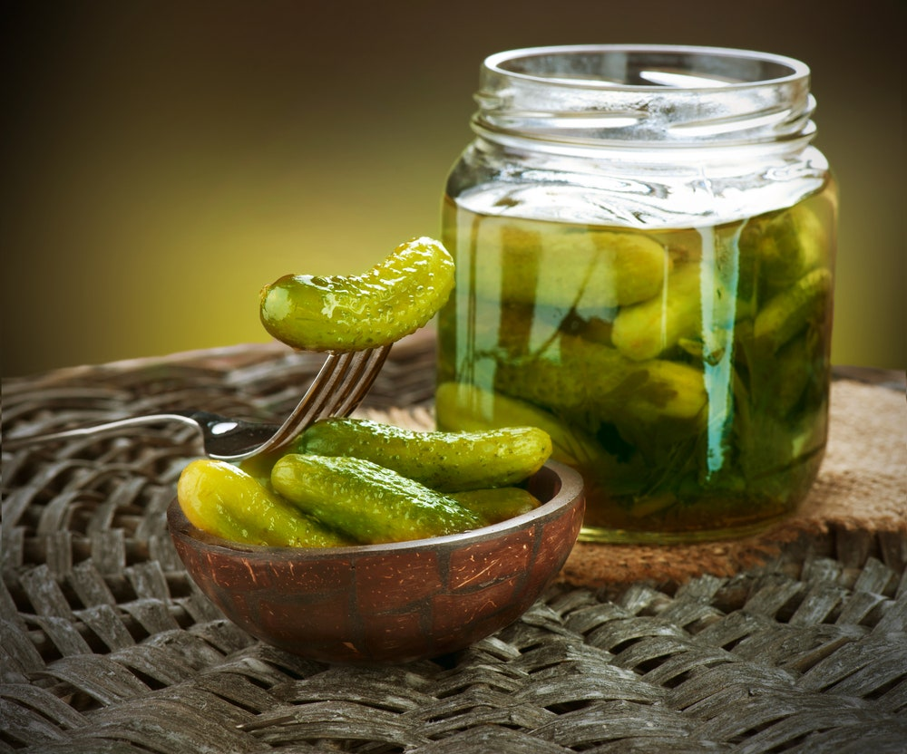

Pickled Cucumber

Description
Pickled cucumber is one of my all time favourite go to snack.
It is very simple to prepare and you don't need any special ingredients.
Most probably you'll find the ingredients in your household.
Go through this page completely, I have shared the entire procedure for preparing my favourite snack.
Ingredients
- Cucumber
- Vinegar
- Salt
- Sugar
- Pickle spice
- Dills
Steps
- Cut the cucumbers in chips or slides (as per your desire)
- Now salt the diced cucumber and leave in refridgerator for about 30 minutes.
- Based on the quantity of cucumber you need to make a brine by mixing equal parts of vinegar and water.
- Add salt, sugar and pickle spices into the brine
- Add the diced cucumber into the brine once it starts boiling. Now keep stove in sim mode and stir slowly for 15 minutes. Finally add the freshly chopped dills.
- You can jar the pickle into an air tight glass container.
- Store the pickle in refridgerator for about 2 weeks. Try them if you can't wait.
There you go! Thats how pickled cucumber is made.
I hope you like this recipe well.